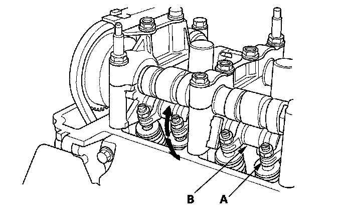
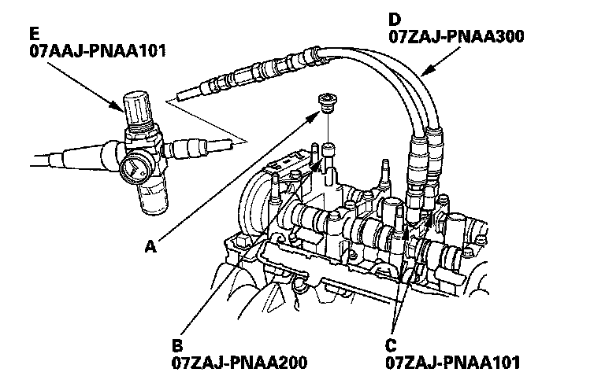
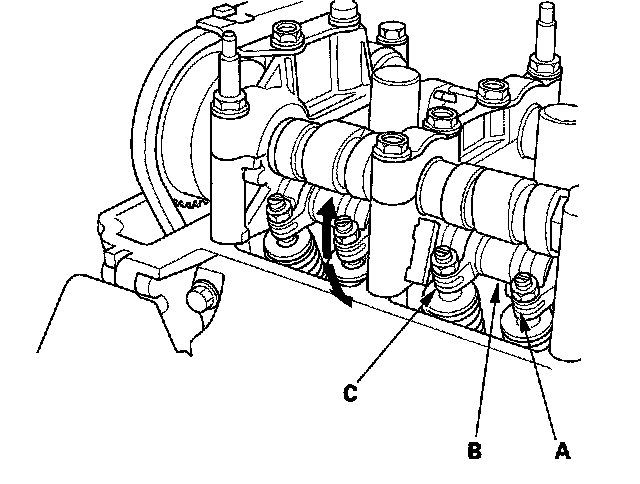

VTEC Rocker Arm Test
VTEC Rocker Arm TestSpecial Tools Required
^ Air pressure regulator 07AAJ-PNAA101
^ VTEC air adapter 07ZAJ-PNAAl01
^ VTEC air stopper 07ZAJ-PNAA200
^ Air joint adapter 07ZAJ-PNAA300
1. Start the engine and let it run for 5 minutes, then turn the ignition switch OFF.
2. Remove the cylinder head cover.
3. Set the No. 1 piston at TDC.
4. Move the secondary rocker arm (A) for No. 1 cylinder. The secondary rocker arm should move independently of the mid rocker arm (B).
^ If the secondary rocker arm does not move, remove the mid, primary, and secondary rocker arms as an assembly, and check that the pistons in the rocker arms move smoothly. If any rocker arm needs replacing, replace the mid, primary, and secondary rocker arms as an assembly, and test.
^ If the secondary rocker arm moves freely, go to step 5.

5. Repeat step 4 on the remaining secondary rocker arms with each piston at TDC. When all the secondary rocker arms pass the test, go to step 6.
6. Check that the air pressure on the shop air compressor gauge indicates over 400 kPa (4.0 kgf/cm2, 57 psi).
7. Inspect the valve clearance.
8. Remove the sealing bolt (A) from the relief hole, and install the VTEC air stopper (B).

9. Remove the No. 2 and No. 3 camshaft holder bolts, and install the VTEC air adapters (C) finger-tight.
10. Connect the air joint adapter (D) and air pressure regulator (E).
11. Loosen the valve on the regulator, and apply the specified air pressure.
Specified Air Pressure:
290 kPa (3.0 kgf/cm2, 42 psi)
NOTE: If the synchronizing piston does not move after applying air pressure; move the rocker arm up and down manually by rotating the crankshaft clockwise.
12. With the specified air pressure applied, move the secondary rocker arm (A) for the No. 1 cylinder. The mid rocker arm (B), primary rocker arm (C), and secondary rocker arm should move together.
^ If the mid and primary rocker arms do not move together with the secondary rocker arm, remove the mid, primary, and secondary rocker arms as an assembly, and check that the pistons in the rocker arms move smoothly. If any rocker arm needs replacing, replace the mid, primary, and secondary rocker arms as an assembly, and retest.

13. Remove the special tools.
14. Tighten the camshaft holder mounting bolts to 22 N-m (2.2 kgf-m, 16 lbf-ft).
15. Tighten the sealing bolt to 20 N-m (2.0 kgf-m, 14 lbf-ft).
16. Install the cylinder head cover.